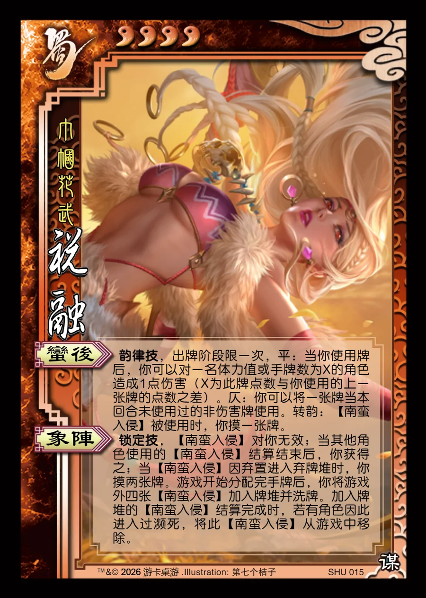

点击卡面查看大图
蜀
谋祝融
♥4巾帼花武
蛮后韵律技
韵律技，出牌阶段限一次，平：当你使用牌后，你可以对一名体力值或手牌数为X的角色造成1点伤害（X为此牌点数与你使用的上一张牌的点数之差）。仄：你可以将一张牌当本回合未使用过的非伤害牌使用。转韵：【南蛮入侵】被使用时，你摸一张牌。
象阵锁定技
锁定技，【南蛮入侵】对你无效；当其他角色使用的【南蛮入侵】结算结束后，你获得之；当【南蛮入侵】因弃置进入弃牌堆时，你摸两张牌。游戏开始分配完手牌后，你将游戏外四张【南蛮入侵】加入牌堆并洗牌。加入牌堆的【南蛮入侵】结算完成时，若有角色因此进入过濒死，将此【南蛮入侵】从游戏中移除。